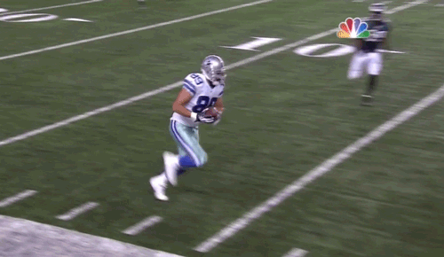

NFL Trivia!

Start
Time left:
60 Seconds
1. Who is the only athlete to ever play in a Super Bowl and a World Series?
Deion Sanders
Russell Wilson
Julio Jones
Cam Newton
2. Which NFL quarterback has been to the most Super Bowls?
Peyton Manning
Drew Brees
Tom Brady
Aaron Rodgers
3. In what year did the Houston Texans become a team in the US National Football League?
2010
2000
2002
2003
4. How many teams are there in the American National Football League?
16
32
23
26
5. Who has the most wins as a head coach in the NFL?
Dan Quinn
Bill Belichick
Andy Reid
Don Shula
6. Who is the last non-quarterback to win NFL MVP?
Adrian Peterson
Eli Manning
Rob Gronkowski
J.J Watt
7. How many years must a player be retired to be eligible for the Pro Football Hall of Fame?
3
10
5
8
8. Who was the first player drafted in the first NFL draft in 1936?
Joe Montana
Jay Berwanger
Bill Hewitt
Wayne Millner
9. What team was originally named the New York Titans?
Tennessee Titans
New Orlean Saints
New York Jets
Chicago Bears
10. Which NFL team features a helmet logo on only one side of their helmet?
San Francisco 49ers
Atlanta Falcons
New England Patriots
Pittsburgh Steelers
Done
Replay
Correct:
0
Incorrect:
0
Unanswered:
0